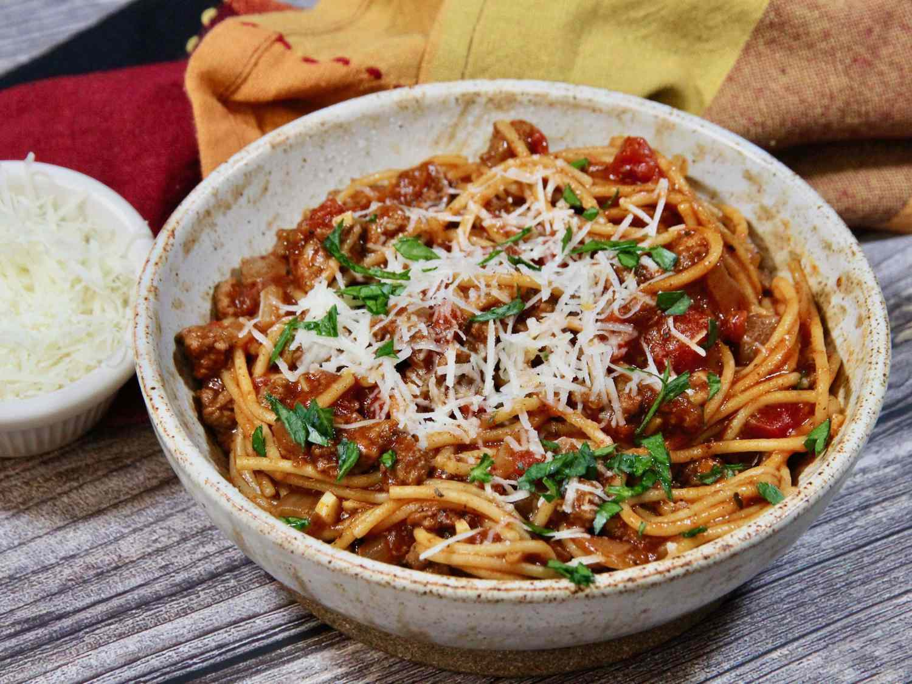

Home
One-Pot Spaghetti

Description
My variation of an old Southern Living recipe - a double recipe will fill a Dutch oven and make plenty for an extended family dinner.
Ingredients
- 1 pound lean ground beef
- 1 large onion, chopped
- 2 cloves garlic, minced
- 1 (14 ounce) can tomato sauce
- 1 (14 ounce) can petite diced tomatoes
- 2 cups water
- 1 tablespoon chili powder
- 1 teaspoon dried oregano
- 1 teaspoon ground black pepper
- 7 ounces whole wheat spaghetti
- ¼ cup grated Parmesan cheese, or to taste (Optional)
Steps
- Heat a Dutch oven over medium-high heat. Cook and stir ground beef, onion, and garlic until beef is browned and crumbly and onion is translucent, 5 to 7 minutes. Drain and discard excess grease.
- Stir in tomato sauce, diced tomatoes, water, chili powder, oregano, and black pepper. Bring to a boil. Cover, reduce heat, and let simmer, stirring often, for about 30 minutes.
- Heat a Dutch oven over medium-high heat. Cook and stir ground beef, onion, and garlic until beef is browned and crumbly and onion is translucent, 5 to 7 minutes. Drain and discard excess grease.